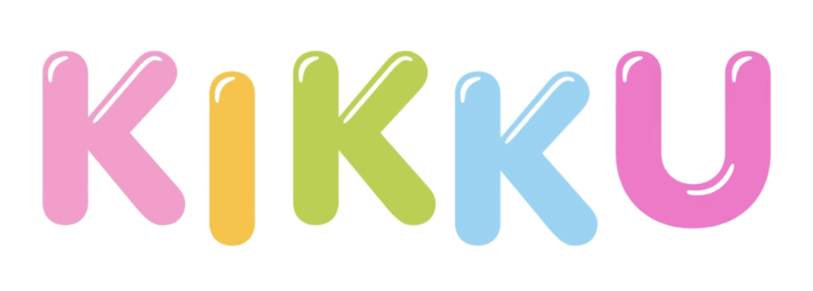

Listen
Hear the words and rhythm together.

A place where children, families and anyone learning Maltese can listen, repeat and learn through music.
A short, familiar song with different words for each topic, making it easier to listen, repeat and remember.
| Malti | English | Italiano |
|---|---|---|
| Jiena | I | Io |
| Inti | You | Tu |
| Huwa | He | Lui |
| Hija | She | Lei |
| Aħna | We | Noi |
| Intom | You (plural) | Voi |
| Huma | They | Loro |
| Malti | English | Italiano |
|---|---|---|
| Ferħan | Happy | Felice |
| Imdejjaq | Sad | Triste |
| Eċċitat / Eċċitata | Excited | Eccitato / Eccitata |
| Irrabjat | Angry | Arrabbiato |
| Kuntent | Content | Contento |
| Malti | English | Italiano |
|---|---|---|
| Bonġu | Good morning | Buongiorno |
| Bonswa | Good evening | Buonasera |
| Il-lejl it-tajjeb | Good night | Buonanotte |
| Saħħa | Goodbye | Arrivederci |
| Ċaw | Hi / Bye | Ciao |
| Malti | English | Italiano |
|---|---|---|
| Grazzi | Thank you | Grazie |
| Jekk jogħġbok | Please | Per favore |
| Pjaċir tiegħi | My pleasure | Piacere mio |
| Napprezza | I appreciate it | Lo apprezzo |
| Ta’ xejn | You’re welcome | Prego |
| Malti | English | Italiano |
|---|---|---|
| B’rota | By bicycle | In bicicletta |
| B’karozza | By car | In macchina |
| Bix-xarabank | By bus | In autobus |
| Bid-dgħajsa | By boat | In barca |
| Jew b’ajruplan | Or by plane | Oppure in aereo |
| Malti | English | Italiano |
|---|---|---|
| In-nannu | Grandfather | Nonno |
| In-nanna | Grandmother | Nonna |
| Ħija | My brother | Mio fratello |
| Oħti | My sister | Mia sorella |
| Il-papà | Dad | Papà |
| Il-mamà | Mum | Mamma |
Hear the words and rhythm together.
Say each Maltese word out loud.
Use the music to make the words memorable.
Listen to more songs or download the free colouring booklet.